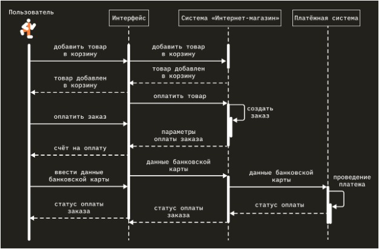
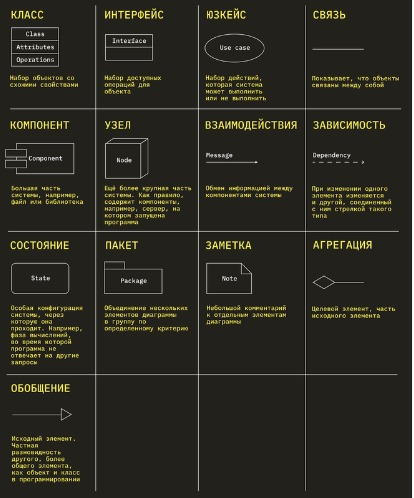
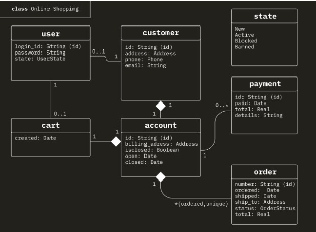
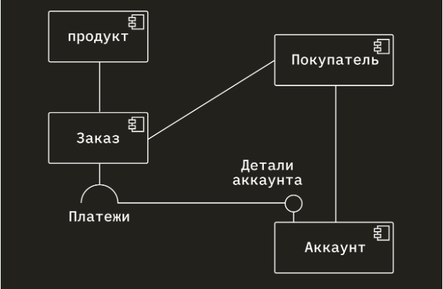
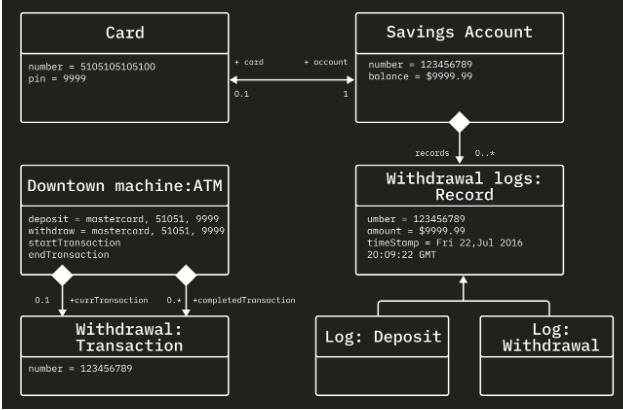
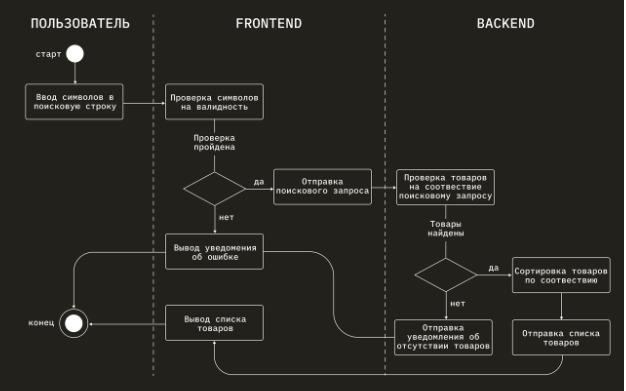
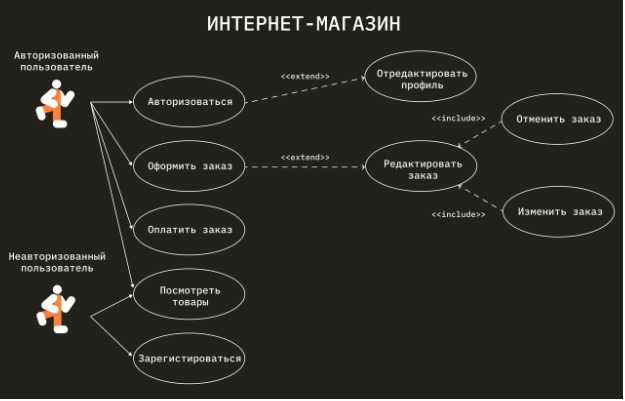
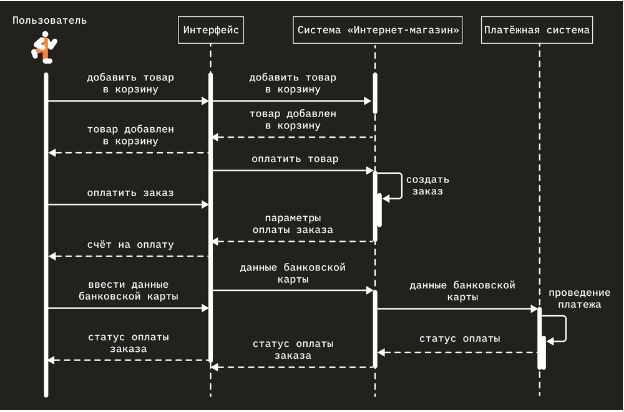

На каком языке рисуют схемы: что такое UML и почему его понимают во всём мире
Для наглядного изображения процессов и явлений используют схемы, но под одним и тем же символом люди могут иметь в виду разное. Чтобы исключить разночтения, разработали стандарт UML.
- Что такое язык UML
- Для чего используется язык UML
- Преимущества UML
- Что такое UML-диаграммы
- Как устроена диаграмма UML
- Типы диаграмм UML
- Как создать диаграмму
Что такое язык UML
UML (от англ. Unified Modeling Language) переводится как «унифицированный язык моделирования». Это графический язык, в котором каждой фигуре, символу, стрелке или их сочетаниям присвоены конкретные значения. Он позволяет визуализировать явление или процесс так, чтобы схема была понятна всем, кто знаком с UML.
Можно сказать, что UML — это набор правил, по которым нужно рисовать схемы. Зная его, можно быстро создавать универсальные графические представления сложных процессов и структур. Именно поэтому IT-специалисты во время разработки ПО часто используют UML-моделирование и проектирование процессов.
Для чего используется язык UML
Язык UML нужен, чтобы описать и визуализировать какую-то абстрактную модель. На практике это может быть:
- Создание модели объекта. Например, описание структуры базы данных.
- Создание модели процессов. Например, последовательность выполнения запросов ПО, чтобы клиент получил ожидаемый результат.
Схему на языке UML можно составить по уже существующему объекту или процессу либо создать на этапе проектирования, чтобы разрабатывать объект или отлаживать процесс. Диаграммы UML применяют в проектировании, презентациях, описании или создании документации.
В аналитике данных тоже используют UML — например, чтобы описать аналитическую программу или структуру информации в проекте. На курсе «Аналитик данных» студентов обучают построению и проектированию сложных систем, в том числе на языке UML.
Преимущества UML
Схемы можно рисовать и без языка, но у использования UML для построения диаграмм есть несколько преимуществ:
- Стандартизация. Схема будет понятна любому, кто знает UML. Это всё равно что говорить на общеизвестном языке. Конечно, можно использовать и выдуманный — по жестам и интонациям будет примерно понятно, о чём речь. Но чтобы однозначно передать сложную информацию, лучше использовать язык, понятный всем.
- Полнота. В языке уже предусмотрены конкретные обозначения для всех сущностей, необходимых в схеме. Не придётся что-то выдумывать в процессе, повторяться или вызывать непонимание у коллег.
- Распространённость. UML используют в IT, менеджменте, инженерии и других сферах. Он понятен и привычен для многих специалистов всего мира.
- Инструменты для автоматизации. Они позволяют автоматически генерировать схемы UML на основе кода. Например, с помощью Umbrello можно быстро создавать наглядные представления кода. Есть и обратные инструменты, которые меняют код в ответ на изменения UML-схемы — например, Microsoft Visual Studio 2010 Feature Pack 2. Таким образом, освоение UML позволяет разработчикам автоматизировать работу.
Что такое UML-диаграммы
Диаграмма — это схема, нарисованная с применением символов UML. Она может содержать множество элементов и соединений между ними. Полное описание масштабного проекта может состоять из несколько UML-диаграмм, связанных или не связанных между собой.
Элементами диаграммы UML могут быть классы программного кода, страницы сайта, части механизма, зоны торгового зала — в зависимости от того, какой процесс или какую сущность описывает её создатель.

Как устроена диаграмма UML
В языке UML десятки разных элементов. Разберём основные элементы языка и их визуальные обозначения.
В UML есть и другие символы. Изучить их полностью — значит изучить «словарь» UML. Важно уметь правильно их применять на практике, в реальных диаграммах, то есть знать «грамматику» языка. Полное описание всех элементов и их применения можно найти в спецификации UML.

Типы диаграмм UML
Все диаграммы UML можно поделить на структурные и поведенческие. Первые описывают структуру сложных объектов и систем, вторые иллюстрируют взаимодействие с системой и процесс её работы. Внутри эти типы делятся на виды UML-диаграмм. Разберём наиболее популярные.
Структурные диаграммы
Диаграмма классов. Отображает структуру системы, содержащей различные объекты и классы. Чаще всего используется, чтобы продемонстрировать иерархию классов внутри программы.

Диаграмма компонентов
Описывает компоненты ПО и их связи между собой. Например, как микросервисы взаимодействуют друг с другом.

Диаграмма объектов
Показывает, как компоненты системы выглядят в определённый момент времени. Позволяет смоделировать объекты системы и связи между ними.

Поведенческие диаграммы
Диаграмма действий, или диаграмма активностей, активити-диаграмма. Показывает последовательность действий, варианты решений и их результаты.

Диаграмма сценариев использования.
В ней обычно изображают пользователей, «агентов», которые взаимодействуют с системой. Эту диаграмму используют для определения функций ПО и связи сценариев использования, то есть юзкейсов, друг с другом. По ней определяют, какие возможности есть у разных групп пользователей и как системы участвуют в выполнении юзкейса.

Диаграмма последовательностей.
Изображает последовательные действия во времени, которые иногда называют сценариями.

Как создать диаграмму
Чтобы построить диаграмму с использованием языка UML, необходимо:
- Изучить синтаксис языка, то есть основные элементы и их значение.
- Просмотреть и изучить разные диаграммы, чтобы понять принципы их построения.
- Начать строить свои диаграммы. Их можно рисовать в обычных графических редакторах или специальных сервисах, например diagrams.net или lucid.app. В сервисах есть готовые наборы элементов, что облегчает работу.